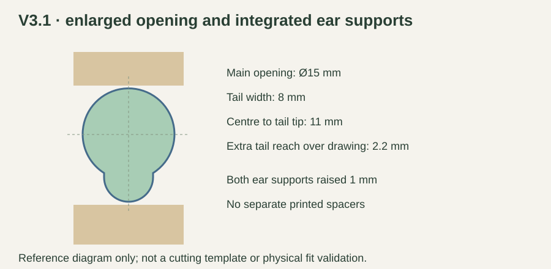
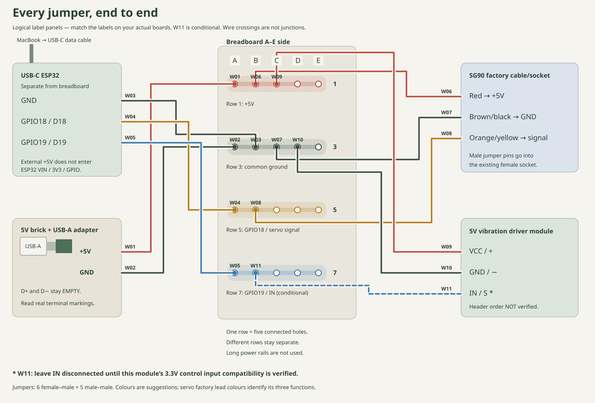
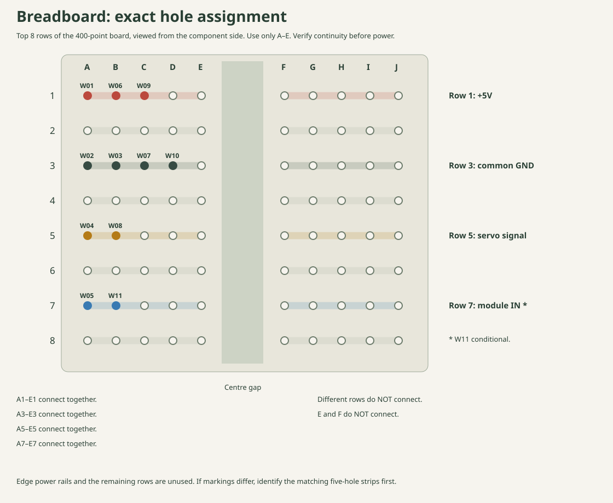

Replace only the hopper and rotary gate. Keep your stand, lid, both clips, servo, supplied horn/screw and electronics. The original full plate and V3.1 hopper are superseded for this repair.
One A1 plate: replacement hopper, replacement gate, three optional packing rings and a reusable 0.6 mm assembly gap spacer. This is the repair itself; no separate test print or additional hardware purchase. Generic PETG reference slice at 20% infill (your 15% slice will differ): 86.64 g / about 3 hours 22 minutes.
What changed
No servo raise. Ear supports stay at the original height. A 1 mm-deep local pocket beneath the rectangular case gives nominal 0.7 mm body clearance using your detailed drawing.
Hopper opening: Ø14.4 mm plus a 6.6 mm-wide tail relief reaching 9.8 mm from shaft centre. It clears the boss and shaft only. Install the horn below the hopper afterward.
Gate horn pocket: 37 × 12 mm, centre through-hole Ø11.2 mm. It accommodates the 32 mm and 35 × 10 mm horn-arm envelopes in your images. A 22 mm circular upper relief clears the stationary gearbox tail as the gate rotates.
Gate thickness: 7.4 mm. The deeper pocket accepts optional packing without reducing full spline engagement. The old gate cannot provide this adjustment. Its pocket floor is 1.4 mm thick, reduced to 0.8 mm at underside tie channels.

Bambu Studio
Open the new 3MF. Select A1 / stock 0.4 mm nozzle, textured PEI plate, matching PETG preset (PETG HF only for an HF spool), 0.20 mm Standard, 3 walls, 5 top and bottom layers, 15% gyroid, supports off, brim none. Keep the supplied layout: hopper flange down/funnel up, gate pockets up, packing and spacer flat. Do not scale. This 3MF contains geometry/layout only.
Along the back of the plate, left to right: 0.4, 0.8 and 1.6 mm packing, then the rectangular 0.6 mm assembly spacer. Identify the packing by thickness; outlines are identical. Let PETG cool before gently lifting the thin pieces.
Assembly: fully seat the horn first
Empty and unplug the dispenser. Remove the old hopper and gate; retain the other parts. Clear stringing from the new parts without changing dimensions.
Insert the servo boss and shaft down through the hopper. The tail points toward the long case side/farther support. Both ears rest on the original-height supports; the case enters its shallow relief. Use one tie through each same-side pair of slots (left pair and right pair), running along the case, with the upper runs bearing on its side edges. Seat the lower runs in the new longitudinal underside channels. Do not run a tie across the shaft. Secure using these tie paths. Do not use tie tension to pull interfering parts into place.
First complete the numbered wiring walkthrough with power unplugged. With the horn removed, center the servo using the existing software. Disconnect external power. Install the supplied double-arm horn below the hopper, fully seated on its spline, and gently secure its supplied screw. The horn does not pass through the hopper opening.
Start with no packing. Lift the gate around the already seated horn, arms in the long pocket, arm outer faces resting on its floor. The centre through-hole clears the hub and gives screw access. Align the gate to its calibrated closed position before fastening.
Target 0.4–0.8 mm between the gate's flat top and hopper underside. The included 0.6 mm strip is a removable assembly aid: insert it at the outer solid flange/gate overlap, away from the boss, outlet and ties. Never force it: a valid 0.5 mm gap will not admit a 0.6 mm strip. It is a reference aid, not a pass/fail gauge; do not add packing merely to make it fit.
If the gate rubs or has too little clearance, lower/remove it while leaving the horn seated. Place packing on the gate pocket floor beneath the horn arms and refit. Adding packing moves the gate down and increases the gap. Use the lowest combination that clears. If the initial gap is already too large, leave packing out; do not loosen the horn or partially disengage its spline to compensate.
Use two existing small zip ties through the new gate slots to hold the horn arms, packing and gate together. Seat ties in the matching upper and underside cross-grooves so the pocket walls do not hold them above the arms; tighten evenly without bowing the gate. Remove the gap spacer and recheck clearance. The horn screw remains accessible through the centre.
Seat the hopper in the existing stand and reinstall both clips. Keep wiring outside the scale bay. Recalibrate open/closed limits with the empty gate using small powered movements. Stop if it rubs or stalls. Nominal CAD positions remain open at 0° and closed at 60°; actual servo commands require calibration. Then try a small flour charge.
Packing selection
The included 0.4 / 0.8 / 1.6 mm rings provide totals of 0, 0.4, 0.8, 1.2, 1.6, 2.0, 2.4 or 2.8 mm. They are optional adjustment parts, not additional servo-ear spacers. Stack only what is needed, under the horn arms in the gate.
If your estimate means the horn arm's outer contact face ends 2 mm beyond the bare shaft tip, the nominal calculation gives a 0.5 mm gate gap with no packing. If the 2 mm refers to another face, that example does not apply; select packing by assembly clearance.
Open the numbered end-to-end wiring walkthrough. It shows both ends of all 11 jumpers, connector types and exact A–E breadboard holes. Match component labels; header order is not verified. Start with both supplies unplugged. Module IN remains conditional on its 3.3V compatibility check.


Row 1 is +5V, row 3 common GND, row 5 GPIO18/servo signal, row 7 GPIO19/module IN. Long edge rails are unused. Follow the walkthrough for each lead, connector end and first power-up.
What was checked
Connected watertight meshes; separate one-plate layout; unchanged flange/clip/outlet interfaces; nominal reference case/ears/boss/shaft clearance; +1.5% boss XY clearance; gate sweep through ±70° at 0.4–0.8 mm gap; stand clearance; 32 and 35 × 10 × 2 mm horn-arm envelopes; packing fit; outlet open/closed coverage; PETG slicing without supports. These are digital checks.
The nominal adjustment envelope accommodates arm contact planes from 2.3 mm beyond to 0.9 mm short of the bare shaft tip, while the horn remains fully seated. Exact component variant, horn hub diameter (10 mm allowance assumed from the image), socket seating, PETG fit/strength, clip retention and flour flow/leakage remain unverified. If your hardware falls outside this range or the hub does not enter freely, stop without forcing or adding more height. Do not reprint the stand.
The stand remains 224 × 140 × 190 mm with a 200 mm clear bay. The thicker gate's nominal underside is 178.3 mm above the table at a 0.6 mm gap; allow about 173 mm below hardware, subject to the real screw and ties. The 105 × 125 × 17 mm scale stays on the table. Actual cup/gripper/robot clearance is unverified.
Wiring is unchanged: USB-C powers/programs the ESP32; the separate regulated 5V USB-A brick/adapter powers servo and vibration module, with common ground. Exact motor-module 3.3V input compatibility remains conditional. Wiring reference.
Individual STLs: hopper and gate. The repair plate includes all packing. The old animation remains a historical reference and does not show this V3.2 interface.